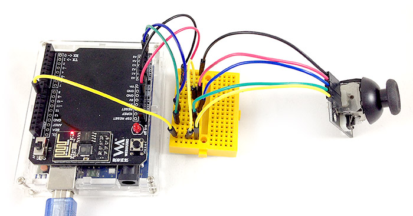
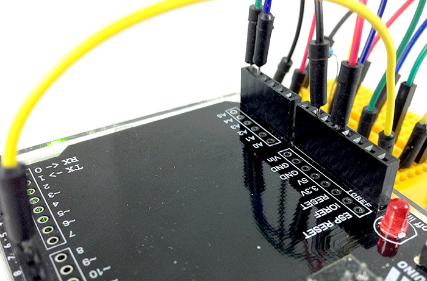
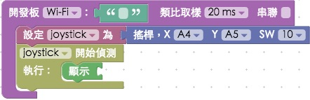
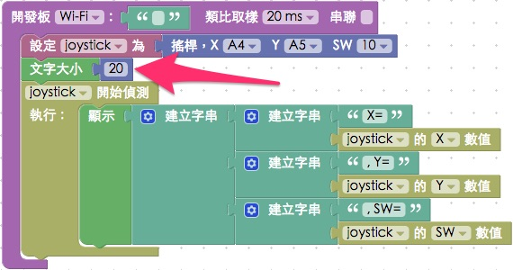
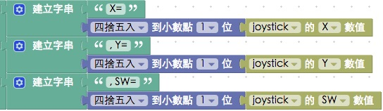

教學範例 25：偵測搖桿行為
在許多遊戲機裡，搖桿是標準的遊戲機配件，一個搖桿可以發出三種訊號，分別是左右、前後以及按下去的時候，我們可以透過 Webduino 來偵測搖桿的訊號，進一步就可以用搖桿控制車子、機器人或一些實體裝置，做出許多有趣的應用。
範例影片展示
接線與實作
搖桿總共有五支接腳，分別是 GND、5V、VRx、VRy 和 SW，VRx 和 VRy 要接類比腳，這裏分別接在 A4 與 A5，SW 我們可以想像他就是一顆按鈕，因此接法在 GND 與 5V 之間必須加入電阻，避免按下按鈕的時候短路，但又因受限於搖桿本身的電路設計，必須採用上拉電阻的做法，也就是電阻接在 5V 的地方，訊號源也跟 5V 相連接。
接線示意圖：

實際接線照片：




Webduino Blockly 操作解析
打開 Webduino Blockly 編輯工具 ( https://blockly.webduino.io )，因為這個範例會用網頁「顯示文字」來顯示搖桿傳回的訊號，所以要先點選右上方「網頁互動測試」的按鈕，打開內嵌測試的網頁，用下拉選單選擇「顯示文字」，此外，記得要先燒錄搖桿的韌體檔！ ( 請參考：韌體檔案燒錄教學，選擇有 joypad 檔名的韌體 )

把開發板放到編輯畫面裡，填入對應的 Webduino 開發板名稱，開發板內放搖桿的積木，名稱設定為 joystick，腳位 X 設定為 A4、Y 設定為 A5、SW 設定為 10。

放入「開始偵測」以及「顯示」的積木，在搖桿有動作的時候，數值就會顯示在畫面裡。

因為搖桿會回傳五個數值 ( X、Y、SW )，但文字顯示欄位只有一個，為了可以一次將所有數值顯示出來，這裏我們使用「建立字串」的積木，利用藍色小齒輪，增加三個缺口，這樣就可以一次顯示三個數值。。

當然只有數值不夠，還要標示這個數值代表什麼，所以這邊要用到二層的「建立字串」積木，裡面放入搖桿數值名稱，至於要取出何種數值，可以透過下拉選單選擇 ( 如果覺得字體太大，可以設定文字大小，這裏設定為 20 )。

確認開發板上線 ( 點選「檢查連線狀態」查詢 )，點選紅色的執行按鈕，轉動或按壓搖桿，就會看見數值的變化。
( 解答：https://blockly.webduino.io/#-KB6z6vqt9sXTYqd7CN8 )

如果覺得一堆小數點不好看，也可以利用「進階功能」裡頭「數值轉換」的積木，就可以設定只到小數點第一位。

確認開發板上線 ( 點選「檢查連線狀態」查詢 )，點選紅色的執行按鈕，轉動或按壓搖桿，就會看見數值的變化。
( 解答：https://blockly.webduino.io/#-KB6zxyhUzw1sJ2RvY56 )
範例解析 ( 完整程式碼、檢查連線狀態 )
HTML 的 header 引入 webduino-all.min.js，目的在讓瀏覽器可以支援 WebComponents 以及 Webduino 所有的元件，如果是用 Blockly 編輯工具產生的程式碼，則要額外引入 webduino-blockly.js。
<script src="https://webduino.io/components/webduino-js/dist/webduino-all.min.js"></script>
<script src="https://webduinoio.github.io/webduino-blockly/webduino-blockly.js"></script>
我們使用一個 span 來顯示搖桿回傳的數值。
<span id="demo-area-01-show">123</span>
搖桿的 JavaScript 使用on這個方法，裡面會有一個函式，帶有三個參數，這三個參數就是搖桿的 X、Y 和 SW 數值，利用innerHTML與字串的相加，我們就可以把這個數值，顯示在 span 裏頭了。
var joystick;
boardReady('', function (board) {
board.samplingInterval = 20;
joystick = getJoystick(board, 4, 5, 10);
document.getElementById("demo-area-01-show").style.fontSize = 20+"px";
joystick.on("message",_read_);
function _read_(_x, _y, _z){
joystick._x = _x;
joystick._y = _y;
joystick._z = _z;
document.getElementById("demo-area-01-show").innerHTML = ([String('X=') + String((Math.round((joystick._x)*10))/10),String(', Y=') + String((Math.round((joystick._y)*10))/10),String(', SW=') + String((Math.round((joystick._z)*10))/10)].join(''));
}
});
以上就是控制搖桿的程式碼簡介。
完整程式碼：http://bin.webduino.io/wifak/edit?html,css,js,output
解答：https://blockly.webduino.io/#-KB6zxyhUzw1sJ2RvY56
如果您還想了解更多，可以參考：
2. Blockly 教學：https://goo.gl/h6s7GY
3. 產品總覽：https://webduino.io/buy.html
4. 露天賣場：http://goo.gl/0Dj9ip